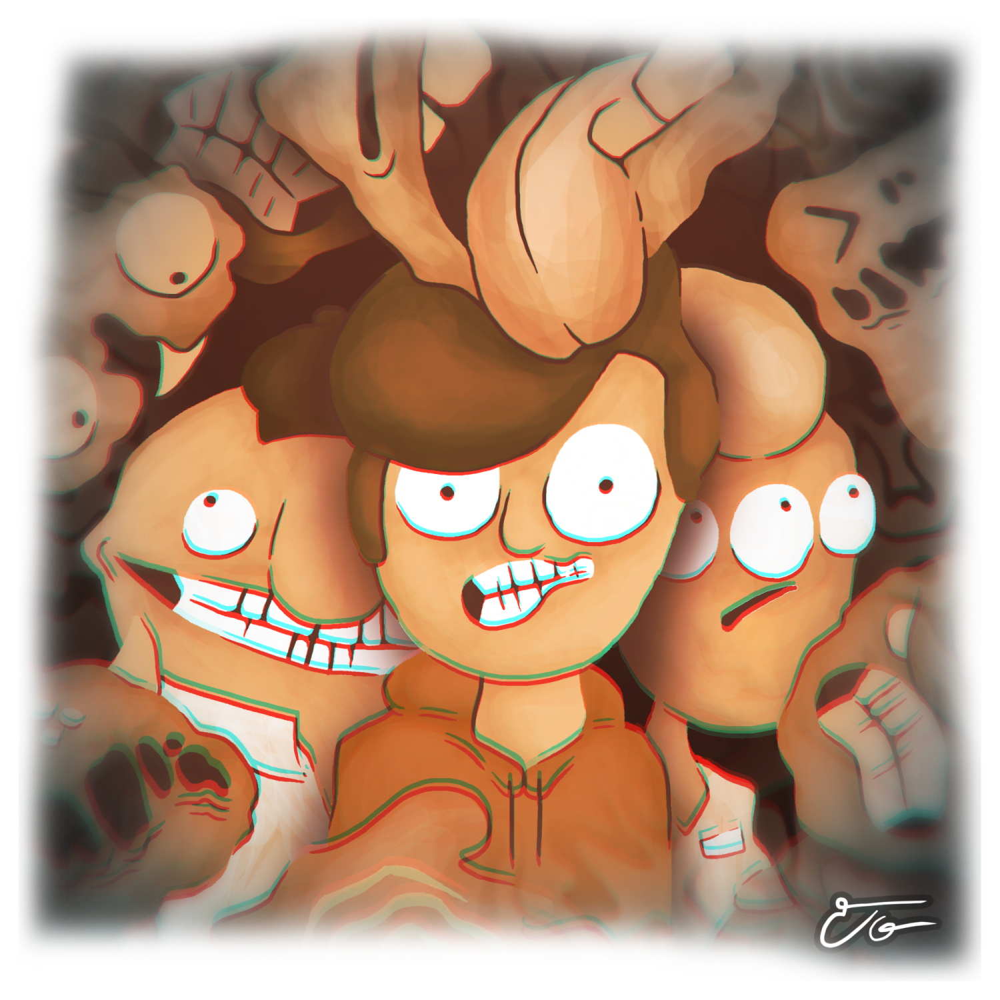

Dante's Illness
 GAME STORY:
Dante works for the pest control agency, he has a job opportunity at Crust avenue. Your friend from high school Centimeter the cab driver helps you, he will get you where you need to be, get ready because this will be a journey you won't forget.
ABOUT THE GAME:
Dante's Illness is a short game by SightCel from Papeero featuring characters from Crust avenue, make the pest control agency proud and complete the job. Defeat pests, collect membranes, buy more ammo and repeat
| Updated | 6 days ago |
| Status | Released |
| Platforms | Windows, macOS, Linux, HTML5 |
| Rating | |
| Author | Papeero |
| Genre | Shooter, Action |
| Made with | Unity |
| Tags | 2D, Creepy, Monsters, papeero, Point & Click, Short, Singleplayer, Unity |
| Average session | About a half-hour |
| Languages | English, Spanish; Latin America |
| Inputs | Keyboard, Mouse |
| Links | YouTube |
Install instructions
You can play the game by double clicking the executable file.
Download
Download
Dante's Illness - 1.3.1.zip 107 MB
Development log
- DANTE'S ILLNESS - 1.2 Release!Jul 04, 2020
Comments
Log in with itch.io to leave a comment.
this is some early newgrounds shit and i love it
Glad you like it!
why can't I claim this game?
You can download the game by clicking the "Download" button.
Fun game with simple but interesting gameplay. And the graphics were AWESOME!! great job! Only thing I would want is a more interactive fight.
Groovy, thank you for playing, thank you for posting your comment. I had plans on adding a boss battle at the end, only problem was that i was running out of time; still, i am getting fun ideas for the next game i'm making.
Awesome! I looks forward to the games you make in the future.
Show post...
FUN
Queen Faith, thank you for playing, thank you for posting your comment and uploading the video. Glad you liked it.
Show post...
so good game
Awesome game: The graphics are well done and animated. I like that the NPC eyes follow the mouse which is a nice detail. There is not much to do except just shot pest and buy stuff. Since this is a point and click game it would be nice if there are some puzzles or challenges.
Miguel, thank you for playing, thank your for posting your comment. I'm planning on adding puzzle features on the next game i'm making